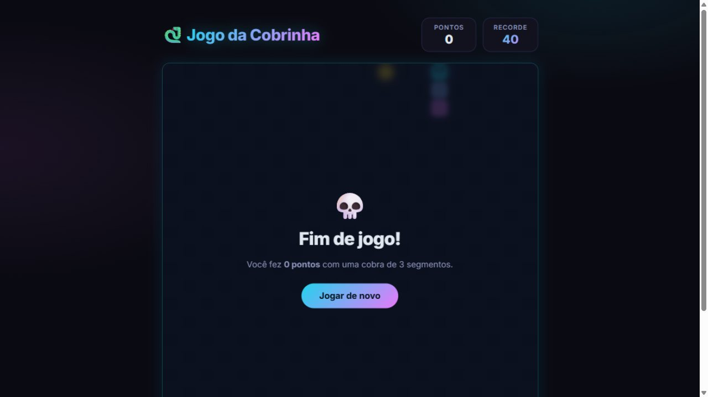
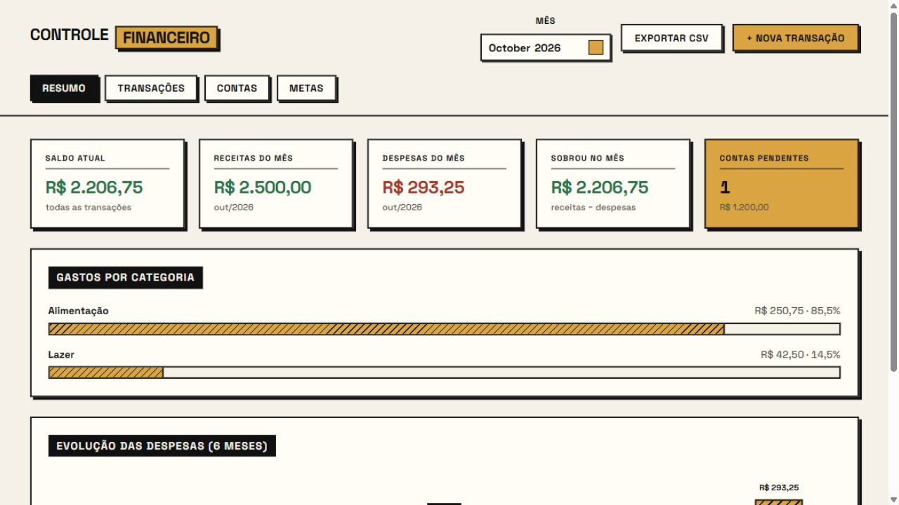

Jogo da Cobrinha
O clássico Snake no navegador: animação suave, controles por teclado e toque, pontuação com recorde salvo e dificuldade progressiva.
Aberto a oportunidades
Olá, eu sou
Estudante de ADS, foco em Back-end e Jogos
Sou estudante de Análise e Desenvolvimento de Sistemas, com formação técnica em TI e interesse em desenvolvimento de software. Estou sempre buscando aprender novas tecnologias, aprimorar minhas habilidades e transformar ideias em projetos.
Comecei na tecnologia pela formação técnica em TI e hoje curso Análise e Desenvolvimento de Sistemas. Gosto de entender como as coisas funcionam por baixo do capô — por isso meu interesse em back-end: dados, regras de negócio e sistemas que resolvem problemas reais.
Também sou fã de jogos, e ver uma ideia minha ganhando vida na tela é o que me motiva a estudar desenvolvimento de jogos por conta própria.
As ferramentas que uso hoje para estudar, praticar e construir projetos.
Do terminal ao navegador: jogos e sistemas em Java e web — e mais por vir.

O clássico Snake no navegador: animação suave, controles por teclado e toque, pontuação com recorde salvo e dificuldade progressiva.

Sistema em Java com versão terminal (CSV) e web (API REST + MySQL): resumo mensal, contas a pagar, metas, análise de gastos e exportação de relatórios.
Tem um projeto em mente, uma oportunidade ou só quer trocar uma ideia? Me chame por e-mail ou pelo GitHub — respondo rapidinho!
Gabriel.dm.sanches@gmail.com